L'Algérie ce situe dans une région géologique active.
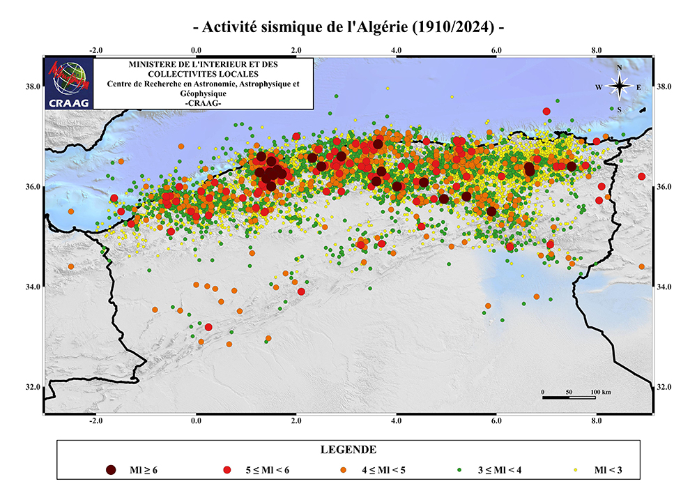
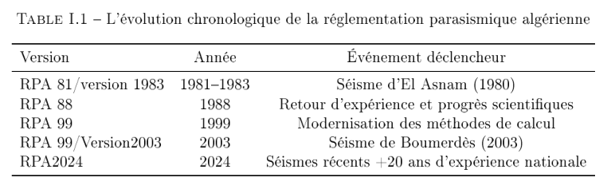
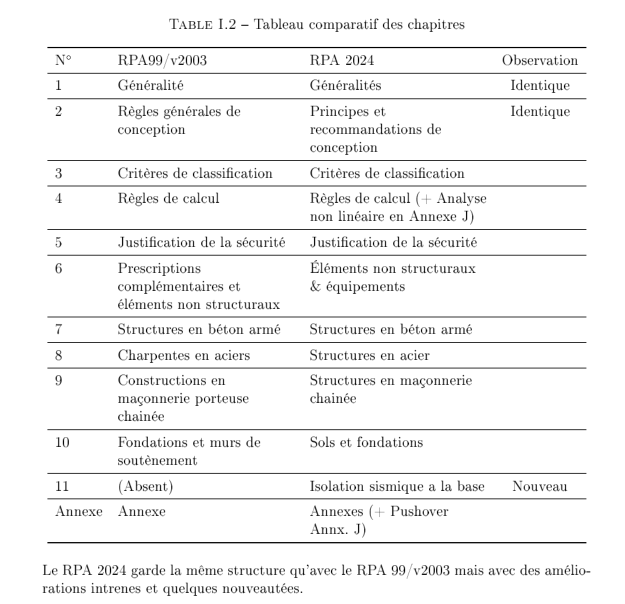
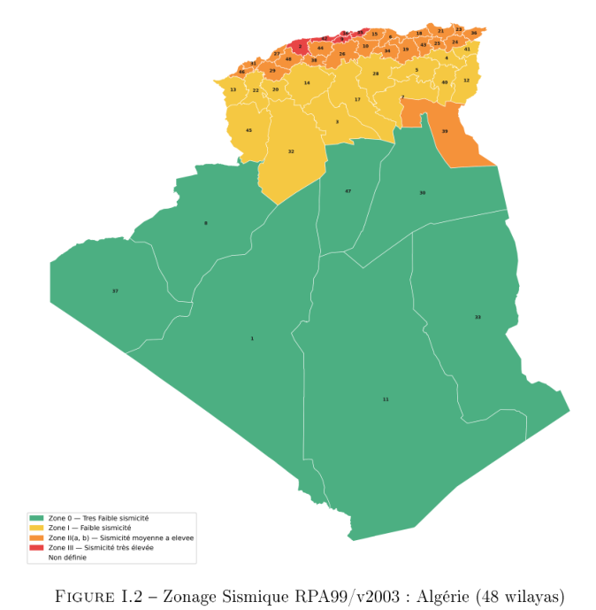
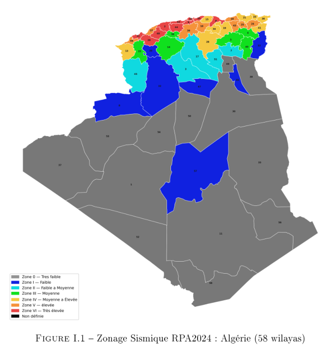
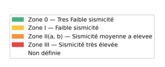
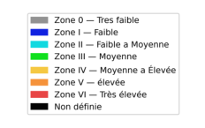
On recense 4 sites identiques :
Conditions pour classer en site S5 :
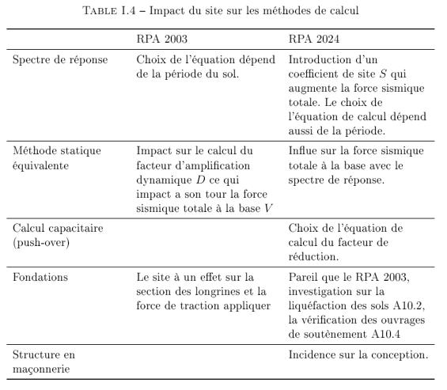
Le coefficient agit comme un facteur multiplicateur
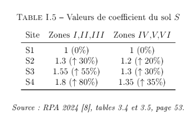
Une analyse des spectres selon les zones est nécessaire.
Le RPA 2003 est composée de 4 catégories :
Le RPA 2024 rajoute :
Le RPA 2024 augmente R pour les systèmes à haute ductilité et diminue pour les systèmes à comportement plus fragile ou moins redondant.
RPA 2003 :
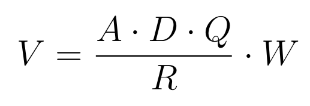
RPA 2024 :
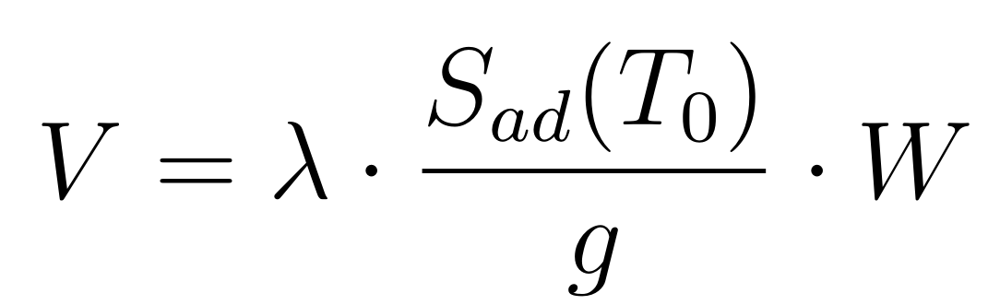
La formule pour calculer le poids :
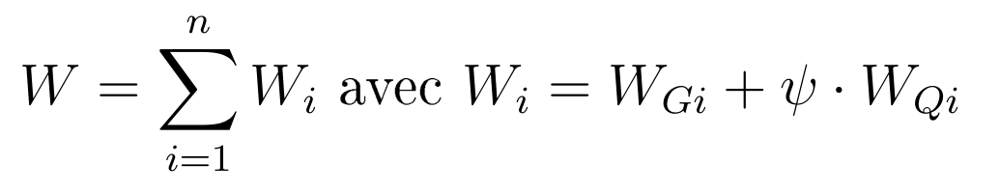
| Type d'ouvrage | Beta RPA 2003 | Psi RPA 2024 |
|---|---|---|
| Bât. à usage d'habitation ou bureaux | 0,20 | 0,30 |
| Bât. recenvant du public temporairment | 0,30 | 0,40 |
| Entropots, hangars | 0,40 | 0,50 |
| Archives, bibliothèques, réservoirs... | 1,00 | 1,00 |
| Autres locaux | 0,60 | 0,60 |
Formules du spectre horizontal de calcul
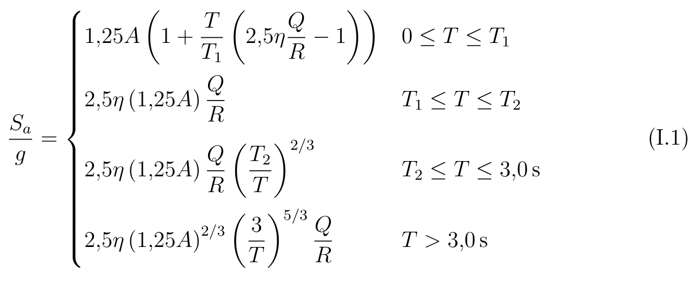
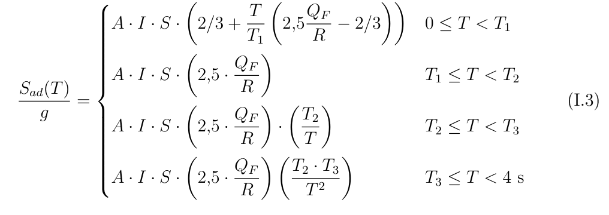
Le RPA 2024 franchit une étape en introduisant le spectre vértical
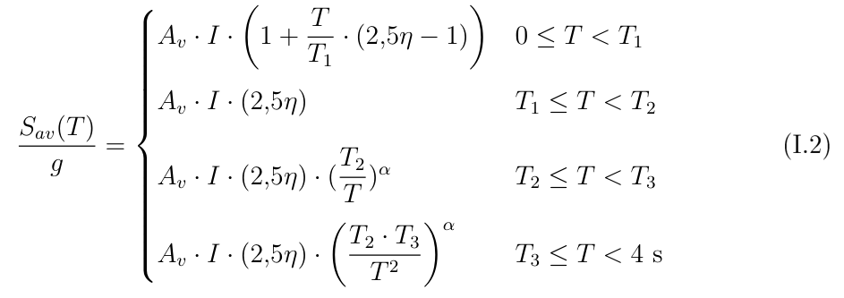
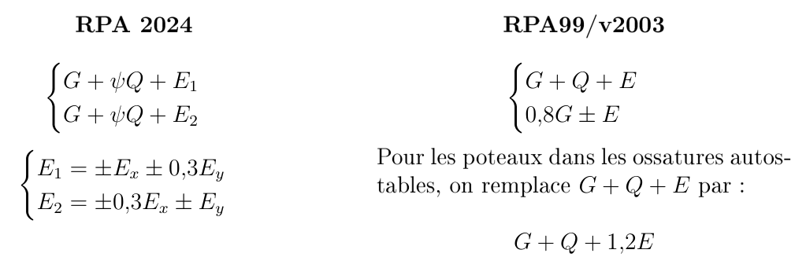
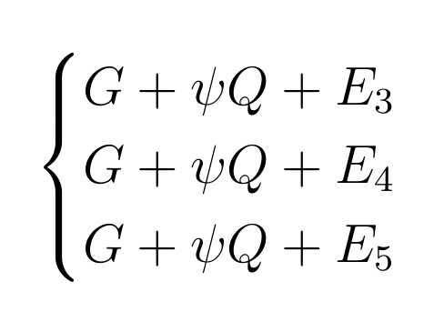
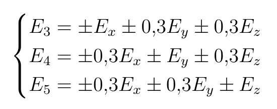
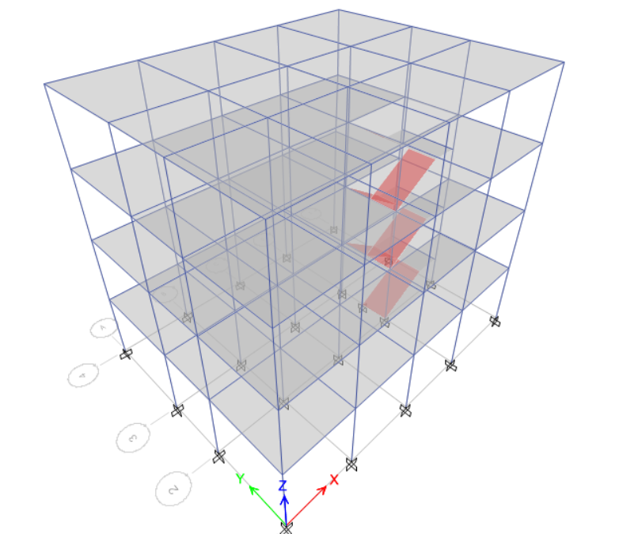
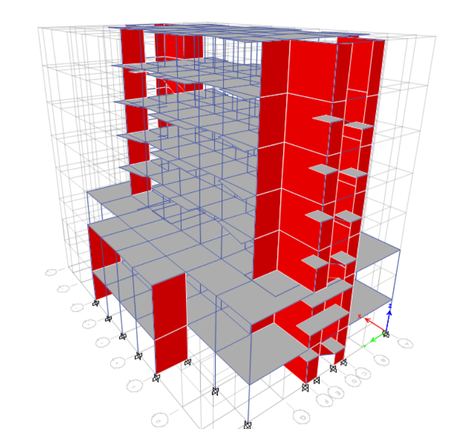
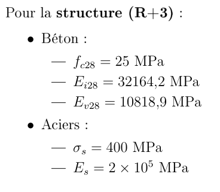
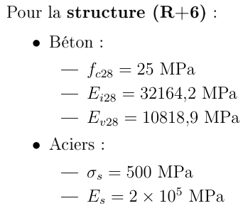
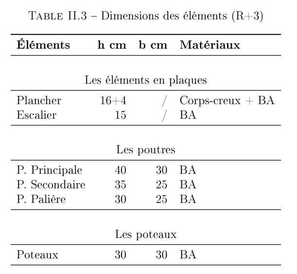
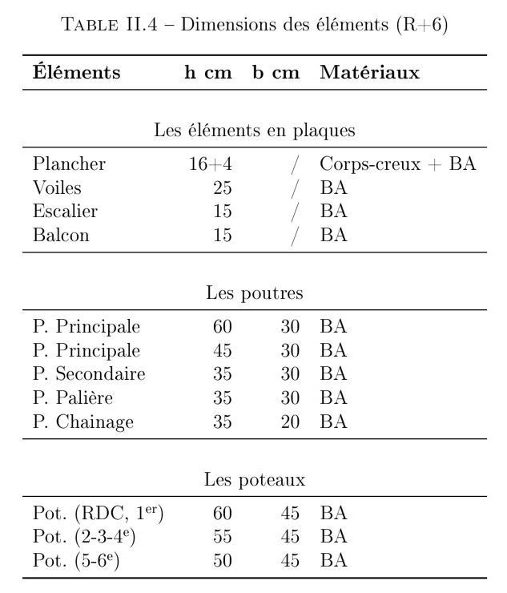
Charges permanentes (G)